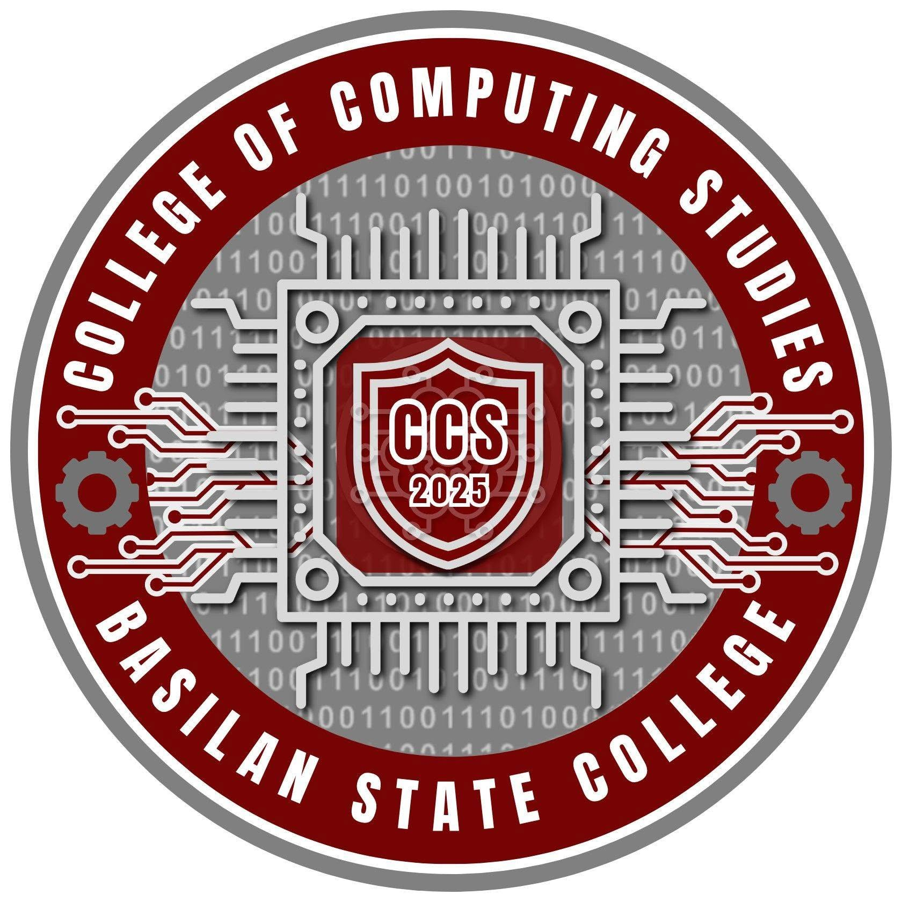

CCS Appreciation Vault
A secured digital tribute created for the teachers who shaped our journey.
Teacher Verification
This appreciation vault was lovingly created by the two of us, especially for you. Inside are messages of gratitude and appreciation, hoping to remind you how much your guidance and dedication mean to us. We hope you’ll cherish this little gift.